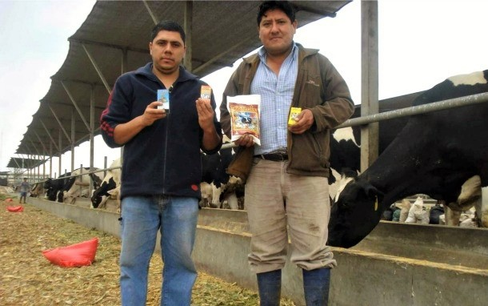

El Dr. Ramos, Director de la Unidad de Lechería, nos contó sobre el funcionamiento de la Unidad de Lechería, su producción, la situación del sector lácteo, sus recientes investigaciones y los posibles cambios que hayan tenido por la actual pandemia.
Nos explicó que los pequeños ganaderos ya no venden directamente a las grandes empresas, debido a que empresas como Gloria y Laive han empezado a tercerizar sus compras con empresas acopiadores (les compran a los ganaderos) y se les paga por volumen, por ejemplo, la Unidad de Lechería les pagaban S/1.10 el litro de leche. Según el Director Ramos, en general, la pandemia no les ha afectado, más bien les ha beneficiado porque debido al contexto la empresa Laive les están comprando directamente la leche (S/1.50 por litro) para venderla al público y hacer productos lácteos, además de que tienen más demanda que oferta.